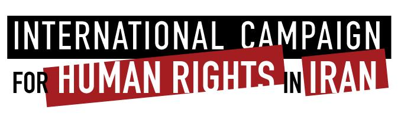

|
|
|
Browsing
Contact Us |
Campaigners |
Face to Face |
Tribune |
Interview |
News |
On the Web |
One Million |
Report
Farsi | Français | German | Italian | Spanish | العربية Also in this section
|
 Iran: Human Rights Defenders Prevented from Leaving Iran; Women’s Rights Advocates ArrestedMonday 11 May 2009 International Campaign for Human Rights in Iran: The Iranian government is continuing to expand its repression of women’s rights activists ahead of the 12 June presidential elections, with a new wave of travel bans, detentions, and summons, the International Campaign for Human Rights in Iran said today. The Campaign reported that Narges Mohammadi, the vice president and spokeswoman of the banned Iranian human rights group Defenders Human Rights Center and a member of the National Peace Council, and Soraya Aziz Panah, the Executive Director of the Center to Clean Mine Fields, were prevented from leaving Tehran on 7 May 2009. They planned to take part in an international women’s conference in Guatemala, organized by the Nobel Women’s Initiative. Their passports were confiscated at the airport by an agent from the President’s Office. They were summoned to appear in the Revolutionary Court within 72 hours. “Once again, Iranian authorities have violated the rights of respected civil society activists in preventing them from leaving the country to attend important international events,” stated Hadi Ghaemi, spokesperson for the Campaign. The Defenders of Human Rights Center, founded by Nobel Peace laureate and human rights Lawyer Shirin Ebadi and others, has been closed since 21 December 2008, when government agents raided an event celebrating the anniversary of the Universal Declaration of Human Rights. The Campaign appealed to Iranian authorities to allow the Center to open and carry on its assistance to Iranian citizens. “Neither the government nor the citizens benefit in any way from illegal and repressive actions, which close human rights groups and prevent their members from participating in international events abroad,” Ghaemi said. “Such actions show a state apparatus afraid of human rights and afraid of the truth about Iran reaching the international community.” Iranian authorities have recently arrested and interrogated a number of other activists working peacefully to change discriminatory laws. Two members of the One Million Signatures Campaign in Qom, Maryam Bidgoli and Fatemeh Masjedi, were arrested on 7 and 8 May 2009. Maryam Bidgoli was arrested on the evening of 7 May while Intelligence agents searched her home and took her personal belongs. Fatemeh Masjedi was arrested in Karaj after her home was searched and her belongings confiscated on the following morning. Gholamreza Salami, a researcher who published "The Women’s Movement in the East" was arrested with Masjedi in Karaj. They were working on a research project together. Bidgoli and Masjedi have been working on behalf of women’s human rights in Qom for many years. According to information received by the Campaign, their recent work in investigating an honor killing had aroused the attention of authorities. Khadijeh Moghaddam, also a member of the One Million Signatures Campaign and Mothers Committee for Peace was summoned to the Security Deputy of the Revolutionary Court along with her husband, Akbar Khosrowshahi, on 8 May. They appeared in Court with their attorney, Nasrin Sotoudeh. Moghaddam was questioned about assistance she gave to victims of the Bam earthquake, as well as her advocacy on behalf of detained labor activists and the detention of another women’s rights defender, Maryam Malek. The Campaign called for an end to the escalating crackdown on women’s rights and human rights activists in Iran. |